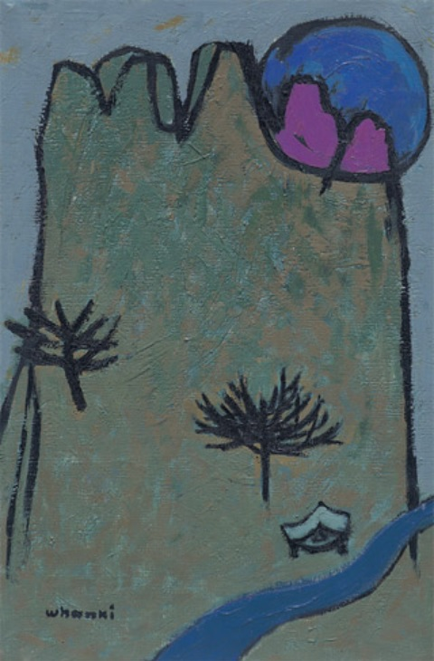
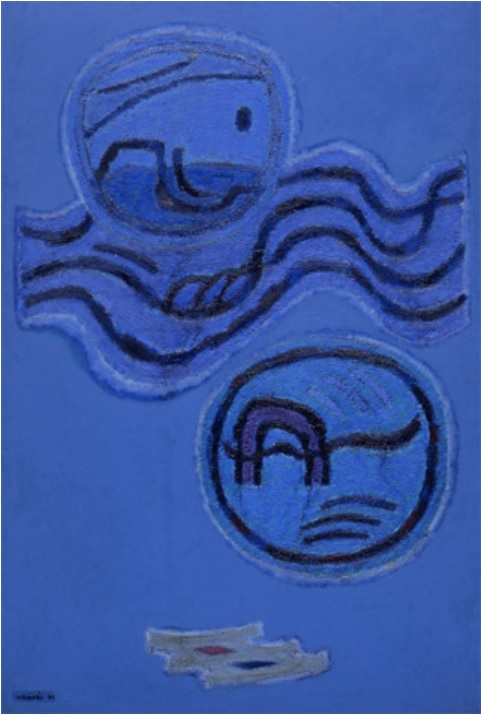
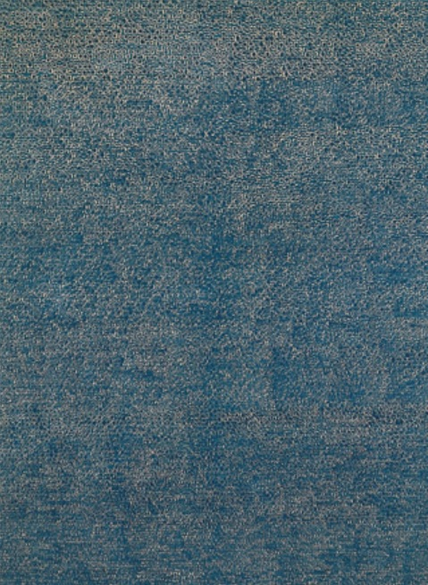
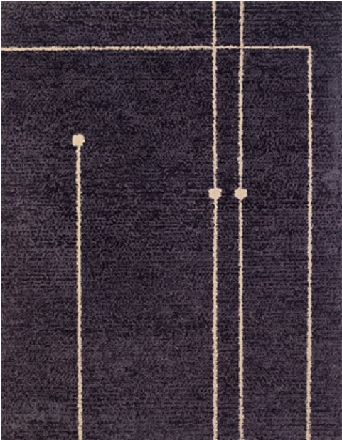

김환기의 일본 생활은 1931년 일본 니시기시로(錦城)중학교로 편입하면서 시작한다.
화가로서의 일본유학시대는 2년 후인 1933년, 일본대학 예술학원 미술부에 입학부터라 할 수 있으며, 후지다 쓰구지, 도고 세이지 등에게 지도를 받게 된다. 이들은 당시 유럽에서 갓
귀국한유학파로써 김환기에게 자연스레 입체파와 미래파의 화풍을 사사하게 된다.
김환기는 1937년 귀국 이전까지 자유전, 백만회 등의 활동을 하면서, 유영국, 문학수, 이중섭, 이규상 등과 교우로써 활동하였고 이후 이들은 한국 추상미술의 초석을 이룬다.
작품세계
알고싶은 시대의 그림을 클릭해보세요
 일본유학시대
일본유학시대1933-1937
서울시대
1937-1956
1937-1956
 파리시대
파리시대1956-1959
서울시대
1959-1963
1959-1963
뉴욕시대
1963-1974
1963-1974
사후전시
1974-1992
1974-1992
일본유학시대 (1933-1937)
종달새 노래할 때, 1935 캔버스에 유채
178x127 cm
178x127 cm
서울시대 (1937-1956)
삼각산, 1954 캔버스에 유채
55x36.5 cm
55x36.5 cm
일본 유학기를 마치고 한국으로 돌아온 김환기는 추상미술에 대해 교우들과 함께 단체를 결성하는 등 본격적인 활동을 시작한다.
그러나, 한국 전쟁으로 인해 부산으로 피난을 가게되고, 해군 종군화가로 일하면서 부산 피난 시절을 표현하는 작품들을 남기게 된다.
이 시기 그의 작품에는 바다, 천막, 여인, 항아리 등으로 피난지의 모습들을 묘사한 작품들이 근간을 이루며, 반 추상의 간결한 선들은 조형의 기본을 탐구하던 기하학적인 모습에서 두터운 마티에르속에 한국의 모습들을 표현하는 선으로 발전하게 된다.
그러나, 한국 전쟁으로 인해 부산으로 피난을 가게되고, 해군 종군화가로 일하면서 부산 피난 시절을 표현하는 작품들을 남기게 된다.
이 시기 그의 작품에는 바다, 천막, 여인, 항아리 등으로 피난지의 모습들을 묘사한 작품들이 근간을 이루며, 반 추상의 간결한 선들은 조형의 기본을 탐구하던 기하학적인 모습에서 두터운 마티에르속에 한국의 모습들을 표현하는 선으로 발전하게 된다.
파리시대 (1956-1959)
매화와 항아리, 1957 캔버스에 유채
53x37 cm
53x37 cm
전쟁이 끝나고 그는 프랑스 파리에 터를 잡고 본격적인 추상화 작업에 들어가게 된다.
이 시기 그는 주로 항아리, 십장생, 매화 등을 기본으로 한 추상정물화 작업을 하게 되며, 이는 후에 고국산천의 모습으로 발전하게 된다.
이 시기 그는 주로 항아리, 십장생, 매화 등을 기본으로 한 추상정물화 작업을 하게 되며, 이는 후에 고국산천의 모습으로 발전하게 된다.
서울시대 (1959-1963)
운월, 1963 캔버스에 유채
193x129 cm
193x129 cm
이 시기 그의 작품은 한국의 자연을 노래한다.
산, 달, 구름은 그의 주요 소재이며, 한국의 자연은 김환기의 손을 거치면서 푸른빛을 근간으로 한 간결한 추상화로 재탄생하게 된다.
산, 달, 구름은 그의 주요 소재이며, 한국의 자연은 김환기의 손을 거치면서 푸른빛을 근간으로 한 간결한 추상화로 재탄생하게 된다.
뉴욕시대 (1963-1974)
무제 10-VIII-70 코튼에 유채
288x213 cm
288x213 cm
1963년 상파울루 비엔날레에 참석한 그는 미국행을 결심하게 되고, 과슈 스케치북 몇 권을 챙겨 미국으로 건너가게 된다.
1964년부터 1970년 첫 점화의 형태가 나오기까지 엄청난 양의 추상화 실험들이 이뤄지게 되고, 점, 선, 면으로의 귀착을 위한 다양한 조형 연습들은 색면 추상, 십자구도, 산월 추상 등의 모습으로, 종이죽 및 신문지에 유채와 같은 다양한 재료로 남아있다.
이 시기 그의 대표 장르인 '점화'가 탄생하는데, 점화는 캔버스에 유화 물감이라는 일반적인 서양화의 재료를 사용하면서 표현에 있어 자연스러운 번짐 효과를 더하여 세계적인 코드로의 한국 미술을 표현하는 그의 대표적인 장르다.
점화는 1970년 한국일보사 주최 '대한민국미술대전'에서 대상을 수상한 '어디서 무엇이 되어 다시 만나랴'와 같이 점을 찍고 여러 겹의 네모를 둘러싸는 점화의 기본 스타일로 시작한다. 점화의 점들은 군을 이루며 면이 되고, 면들은 서로 나뉘고 모이고 회전하는 등의 다양한 형태로 변화한다.
1964년부터 1970년 첫 점화의 형태가 나오기까지 엄청난 양의 추상화 실험들이 이뤄지게 되고, 점, 선, 면으로의 귀착을 위한 다양한 조형 연습들은 색면 추상, 십자구도, 산월 추상 등의 모습으로, 종이죽 및 신문지에 유채와 같은 다양한 재료로 남아있다.
이 시기 그의 대표 장르인 '점화'가 탄생하는데, 점화는 캔버스에 유화 물감이라는 일반적인 서양화의 재료를 사용하면서 표현에 있어 자연스러운 번짐 효과를 더하여 세계적인 코드로의 한국 미술을 표현하는 그의 대표적인 장르다.
점화는 1970년 한국일보사 주최 '대한민국미술대전'에서 대상을 수상한 '어디서 무엇이 되어 다시 만나랴'와 같이 점을 찍고 여러 겹의 네모를 둘러싸는 점화의 기본 스타일로 시작한다. 점화의 점들은 군을 이루며 면이 되고, 면들은 서로 나뉘고 모이고 회전하는 등의 다양한 형태로 변화한다.
사후전시 (1974-1992)
무제 07-VIII-74 코튼에 유채
234x183 cm
234x183 cm
| 1975 | 「환기 1961~74」초대 회고전, <산월> 등
15점 출품, 포인덱스터 화랑, 뉴욕
상파울로 비엔날레 특별초대회고전 「김환기 대회고전 1936~74」, 개인소장가 · 작가소장 등 160점 출품, 국립현대미술관, 서울 |
| 1977 | 「환기 1965~70」, 포인덱스터 화랑, 뉴욕 「김환기 회고전」, 동경화랑, 동경 「김환기 회고전 1954~74」, 현대화랑, 서울 |
| 1978 | 「김환기 1965~74」, 1965년에서 1974년에 이르는 유화 15점 출품,
딘텐파스 화랑 · 포인덱스터 화랑 동시 개최, 뉴욕 |
| 1978,79, 1980,83 |
파리 FIAC출품, 뉴욕 포인덱스터 화랑 대표로 출품 |
| 1981 | 「김환기 1967~71」, 1967년에서 1971년에 이르는 작품을 비롯한
유화와
오브제 출품, 딘덴파스 화랑, 뉴욕 「김환기 회고전」, 현대화랑, 서울 |
| 1982 | 「빛나는 항해전」, 스케치북을 모아 출품, 포인덱스터 화랑, 뉴욕 「수화 김환기전 1963~70」, 현대화랑, 서울 |
| 1984 | 「김환기 스케치북전」, 포인덱스터 화랑, 뉴욕 「김환기 10주기 회고전」, 70여점의 국내 소장품과 뉴욕에서 제작한 대표작 출품, 국립현대미술관, 서울 「김환기 기념전」, 딘텐파스 화랑, 뉴욕 |
| 1990 | 「드로잉 1953~1959」, 현대화랑, 서울 「유화 1967~1968」, 현대화랑, 서울 |